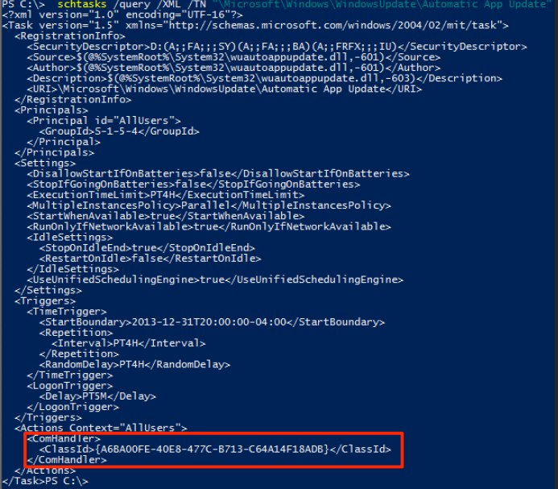

First, a bit of background on the registry and how this technique works. The HKEY_CLASSES_ROOT (HKCR) registry hive is just a combination of HKLM:\Software\Classes and HKCU:\Software\Classes. Due to the fact that these are merged, you can “hijack” keys in HKCR:\CLSID by adding keys in HKCU:\Software\Classes\CLSID. This is important because a lot of things (such as Scheduled Tasks) pull from HKCR:\CLSID for actions. Hijacking is possible due to how HKCR works- since HKCR is a merge of HKLM and HKCU, userland COM objects will load from HKCR:\CLSID, which is a merged view of HKLM:\Software\Classes\CLSID and HKCU:\Software\Classes\CLSID. Since we are able to write directly to HKCU:\Software\Classes\CLSID we can effectively hijack the keys in HKCR:\CLSID. You can read more about about HKCR and Per-User COM here and here, and more on COM registration/permissions here.
Looking at a few Scheduled Tasks, we can see that some of them have an action set as a “Custom Handler”:
In order to view what the action actually is, we can simply pull the XML specification by running schtasks /query /XML /TN “\Microsoft\Windows\WindowsUpdate\Automatic App Update”

As you can see, there is a ComHandler associated with the Task’s action. This means that when the task runs, it reaches out to “HKCR:\CLSID\{A6BA00FE-40E8-477C-B713-C64A14F18ADB}\InprocServer32” (or whatever CLSID is supplied) and runs whatever DLL is specified.

By modifying HKCU:\Software\Classes\CLSID we are able to directly change the “Default” value in the corresponding key located in HKCR:\CLSID (which is what some scheduled tasks pull from). Since HKCR:\CLSID is a merged view of HKCU:\Software\Classes, we can only hijack HKCR:\CLSID keys in userland, so HKCU doesn’t apply to LocalSystem events (unless running as SYSTEM). Due to this, you can only abuse this via the user context you are running under. You are able to persist as SYSTEM via the same technique by obtaining access to write to HKLM:\Software\Classes\CLSID as LocalSystem tasks pull directly from HKLM instead of HKCR (in most instances). You can read more on this here and here
By adding this key & the InprocServer32 subkey to HKCU:\Software\Classes\CLSID and adding our own DLL.

We can change the “Default” value of the corresponding key in HKCR:\CLSID to a different DLL.

Since the selected Scheduled Task runs whatever DLL is present in the “Default” key, it will execute our DLL. By hijacking a task that is set to execute on user logon we can achieve userland persistence. You can determine which tasks are set to execute on logon by checking the “Triggers” tab:

Once the task executes, it will load our specified malicious DLL
By abusing the fact that some tasks have “Custom Handlers” set as actions, we can hijack the corresponding COM handler in the registry and force the task to execute our malicious DLL on logon instead of the legitimate one.
I have provided a script to check all tasks that execute on logon and have a COM Handler action associated. You can use this to check for any anomalies in keys associated with Scheduled tasks that execute on logon:
https://github.com/enigma0x3/Misc-PowerShell-Stuff/blob/master/Get-ScheduledTaskComHandler.ps1
This script will pull every Scheduled Task that has a COM handler associated with its action and will tell you the task name, CLSID registry key, the DLL associated with that CLSID, if the task is set to execute automatically on user logon, and if the task executes in a normal user context (meaning it can be hijacked):